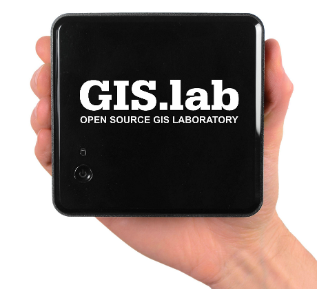

GIS.lab Unit appliance is a hardware solution containing installation of GIS.lab system which is ready for immediate plug-and-play deployment and user friendly management using web administration interface.

GIS.lab Unit appliance
Technical specification
Hardware
- CPU: Intel Core i5 3427U 1,8 GHz
- RAM: 8 - 16 GB DDR3 Kingston
- Disk: 60 - 480 GB SSD Kingston
- Size: 116,6 mm x 39 mm x 112 mm
Software
GIS.lab Server
- Deployment: Ansible
- Operating system: Ubuntu Linux LTS
- Authentication: LDAP (OpenLDAP)
- DNS: BIND
- Email: Postfix
- Time service: NTP
- Files storage: EXT4, LVM, NFS 4
- Database storage: PostgreSQL/PostGIS
- Monitoring services: Syslog-NG, Logcheck, Munin
- Remote access: VPN (OpenVPN)
- Clustering: HAProxy, Serf
- Communication: IRC (IRCD Hybrid)
- Web services: NGINX, Lighttpd, Django, Gunicorn
- Map services: WMS, WFS (QGIS Server)
- Desktop client boot service: DHCP (ISC DHCP), NBD
GIS.lab Desktop
- Operating system: Ubuntu Linux LTS
- Desktop environment: XFCE
- Office suite: LibreOffice
- Web browser: Firefox
- Graphics editor: GIMP, Inkscape
- Video player: VLC
- Secure data storage: KeepassX
- Database management: PgAdmin, SpatiaLite GUI
- GIS software: QGIS, GRASS GIS
- Virtual client support: VirtualBox Guest Additions